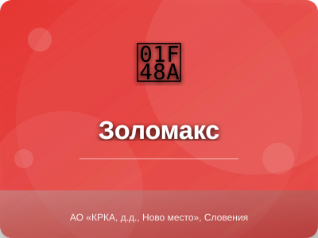

Золомакс (Zolomax)

Золомакс - препарат группы антибиотики
Описание препарата
Золомакс (азитромицин) - полусинтетический антибиотик группы макролидов последнего поколения. Оказывает бактерицидное действие, связываясь с 50S-субъединицей рибосом бактерий. Препарат угнетает синтез белка микроорганизмов, замедляет их рост и размножение. Обладает широким спектром противомикробного действия, включая грамположительные и грамотрицательные бактерии, а также внутриклеточные патогены.
Состав
Активное вещество: азитромицина дигидрат 250 мг, 500 мг. Вспомогательные вещества: кальция гидрофосфат безводный, гипромеллоза, крахмал кукурузный, магния стеарат, целлюлоза микрокристаллическая, натрия лаурилсульфат, титана диоксид, полиэтиленгликоль.
Показания к применению
Инфекции верхних дыхательных путей (фарингит, тонзиллит, синусит, отит средний), инфекции нижних дыхательных путей (острый бронхит, обострение хронического бронхита, внебольничная пневмония), инфекции кожи и мягких тканей (рожа, импетиго, вторичные пиодерматозы), начальная стадия болезни Лайма, инфекции урогенитального тракта.
Противопоказания
Повышенная чувствительность к макролидам, тяжелая печеночная недостаточность, почечная недостаточность (СКФ менее 10 мл/мин), одновременный прием эрготамина и дигидроэрготамина, детский возраст до 12 лет (для таблеток 500 мг), период грудного вскармливания.
Категория при беременности: B
Способ применения и дозы
Внутрь за 1 час до или через 2 часа после еды 1 раз в сутки. Взрослым: 500 мг в сутки в течение 3 дней (курсовая доза 1.5 г). При начальной стадии болезни Лайма: 1 г в первый день, затем по 500 мг со 2-го по 5-й день (курсовая доза 3 г). Таблетки проглатывать целиком, запивая водой.
Побочные действия
Со стороны ЖКТ: тошнота, диарея, боль в животе, метеоризм, рвота, диспепсия. Со стороны нервной системы: головная боль, головокружение, сонливость, нарушение вкуса. Аллергические реакции: кожная сыпь, зуд, ангионевротический отек. Редко: транзиторное повышение активности печеночных трансаминаз, холестатическая желтуха.
Взаимодействие с другими лекарствами
Антациды (алюминий- и магнийсодержащие) замедляют всасывание азитромицина (интервал между приемом не менее 2 часов). Усиливает действие варфарина, циклоспорина, дигоксина. При одновременном применении с эрготамином возможно развитие эрготизма. Несовместим с гепарином.
Передозировка
Симптомы: тошнота, рвота, диарея, временная потеря слуха. Лечение: промывание желудка, прием активированного угля, симптоматическая терапия, контроль жизненно важных функций.
Условия хранения
Хранить при температуре не выше 25°C в сухом, защищенном от света месте, недоступном для детей. Срок годности - 2 года.
Производитель
АО «КРКА, д.д., Ново место», Словения
Информация предоставлена в ознакомительных целях. Перед применением проконсультируйтесь с врачом. Данная инструкция не является руководством к самолечению.